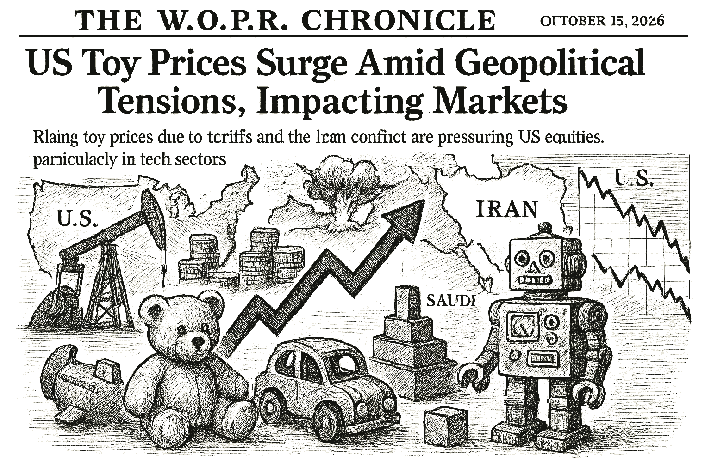

SPY
Current: $766.89Change: -7.04 (-0.91%)
Updated:
Source: yahoo_chartFreshness: fresh


Rising toy prices due to tariffs and the Iran conflict are pressuring US equities, particularly in tech sectors.

Today's Headline: US Toy Prices Surge Amid Geopolitical Tensions, Impacting Markets
Setup: Rising toy prices due to tariffs and the Iran conflict are pressuring US equities, particularly in tech sectors.
Primary Topic: US Toy Prices
Specific Development: US toy prices are surging ahead of the holiday shopping season as tariffs and the ongoing Iran conflict exert upward pressure.
Why Today Is Different: This surge in toy prices is causing significant market reactions, particularly in tech stocks, as investors reassess the economic landscape.
Secondary Topics: Geopolitical Tensions; Market Reactions; Tech Stocks
Tone: cautious
Sectors: Technology; Consumer Discretionary
Companies: TSLA; AVGO
Commodities: Oil; Copper
Countries Or Regions: United States; Iran
Macro Themes: Inflation; Supply Chain Issues
Why This Story: The interplay between rising consumer prices and geopolitical tensions could reshape market sentiment and investment strategies.
Why This Matters: The surge in toy prices signals potential inflationary pressures that could affect consumer spending and market dynamics.

Summary: US equities are under pressure as rising toy prices and geopolitical tensions weigh on investor sentiment.
What Happened Overnight: Tech stocks, particularly QQQ and SPY, are experiencing declines as geopolitical tensions escalate.
What Changed Materially: The focus on consumer price increases due to tariffs and geopolitical issues is reshaping market expectations.
Which Assets Sectors Are Affected: Tech Stocks; Consumer Discretionary
Does It Look Like Noise Or A Real Regime Input: This appears to be a real regime input, given the significant market reactions.
Why This Matters: Joshua can use verified cross-asset moves and deterministic risk context while keeping causation explicitly unresolved.

TSLA Earnings Expectations — 2026-10-21, After Close
Consensus EPS: $0.45
Year-ago EPS: unavailable
Expected EPS growth: unavailable
Consensus revenue: $28.4B
Year-ago revenue: unavailable
Expected revenue growth: unavailable
Source: finnhub_earnings_calendar · As of: 2026-10-15T14:06:52.363518+00:00 · Freshness: current

- WOPR learning pipeline: Learning present — untrusted
- Candidates evaluated 24h: 0
- Current gate: Learning trust
- Notification ledger events in 24h: 6
- Pending orders created/canceled/filled/expired: 1/0/0/0
- Pending lifecycle interpretation: Pending-order cancellations have trackable reasons and no obvious rapid churn pattern.
- Portfolio risk: Label: High / Score: 100.0
- Latest intelligence gap report: intelligence_gap_report_2026-10-11.pdf
Why This Matters: The active gate is Learning trust, so the key question is why candidates are stopping before approval, not how to force trades.

- Sentinel role: infrastructure and operational status only.
- State: ONLINE
- Last successful validation: 2026-10-15T14:14:09.994774+00:00
- Payloads accepted/rejected: 26800/0
- Node health score: 100
Why This Matters: Sentinel is ONLINE, so Joshua should use its context only to the extent the latest accepted pulse is fresh and authenticated.

CANDIDATES MOVING THROUGH JOSHUA'S INVESTMENT-REVIEW WORKFLOW
FROZEN DAILY BRIEF SNAPSHOT | 2026-10-15T14:11:34.038169+00:00
QUEUE SUMMARY | Investment Ready: 0 | Waiting for Price: 0 | Waiting for Evidence: 1 | Research Underway: 2 | Governance Hold: 6 | Monitor Only: 0
Investment-ready status: No candidates are currently Investment Ready.
#6 NVDA - Waiting for Evidence [Moved Down 5->6]
Joshua's Thesis: Positive thesis not yet established.
Why Waiting: Positioning gate failed.
Price: 215.54 now; 214.74 preferred entry
What Unlocks It: Clear valuation support; Evidence that the business quality matches the risk being taken; Independent evidence streams pointing the same way
Portfolio Fit: 0.0/100 — VERY LOW
Portfolio Fit Drivers: projected Technology exposure 66.7%; projected AI infrastructure exposure 66.7%; candidate amount $100 vs $50 currently allocated
Candidate Risk: 97.5/100 — VERY HIGH ↓
Risk Drivers: projected Technology exposure 66.7%; projected AI infrastructure exposure 66.7%; candidate amount $100 vs $50 currently allocated
Next: Positioning status must no longer be warning. Owner: Joshua.
#7 AVGO - Governance Hold [Moved Down 6->7]
Joshua's Thesis: Positive thesis not yet established.
Why Waiting: Governance gate has not cleared.
Price: 337.57 now; 357.70 preferred entry
What Unlocks It: Governance gate clears; Clear valuation support; Evidence that the business quality matches the risk being taken
Portfolio Fit: 0.0/100 — VERY LOW
Portfolio Fit Drivers: projected Technology exposure 66.7%; projected AI infrastructure exposure 66.7%; candidate amount $100 vs $50 currently allocated
Candidate Risk: 97.5/100 — VERY HIGH ↓
Risk Drivers: projected Technology exposure 66.7%; projected AI infrastructure exposure 66.7%; candidate amount $100 vs $50 currently allocated
Next: Re-evaluate after the recorded gate clears. Owner: Columbo.
#10 QBTS - Governance Hold
Joshua's Thesis: Positive thesis not yet established.
Why Waiting: Governance gate has not cleared.
Price: 11.73 now; 17.52 preferred entry
What Unlocks It: Governance gate clears; Clear valuation support; Evidence that the business quality matches the risk being taken
Portfolio Fit: 0.0/100 — VERY LOW
Portfolio Fit Drivers: projected Unclassified exposure 66.7%; projected Unclassified exposure 66.7%; candidate amount $100 vs $50 currently allocated
Candidate Risk: 97.5/100 — VERY HIGH ↓
Risk Drivers: projected Unclassified exposure 66.7%; projected Unclassified exposure 66.7%; candidate amount $100 vs $50 currently allocated
Next: Re-evaluate after the recorded gate clears. Owner: Joshua.
#15 PLTR - Governance Hold
Joshua's Thesis: Positive thesis not yet established.
Why Waiting: Governance gate has not cleared.
Price: 195.80 now; 196.80 preferred entry
What Unlocks It: Governance gate clears; Clear valuation support; Evidence that the business quality matches the risk being taken
Portfolio Fit: 0.0/100 — VERY LOW
Portfolio Fit Drivers: projected Technology exposure 66.7%; projected AI software exposure 66.7%; candidate amount $100 vs $50 currently allocated
Candidate Risk: 97.5/100 — VERY HIGH ↓
Risk Drivers: projected Technology exposure 66.7%; projected AI software exposure 66.7%; candidate amount $100 vs $50 currently allocated
Next: Re-evaluate after the recorded gate clears. Owner: Columbo.
#17 RCL - Governance Hold [Moved Up 19->17]
Joshua's Thesis: Positive thesis not yet established.
Why Waiting: Governance gate has not cleared.
Price: 276.11 now; 276.28 preferred entry
What Unlocks It: Governance gate clears; Clear valuation support; Evidence that the business quality matches the risk being taken
Portfolio Fit: 0.0/100 — VERY LOW
Portfolio Fit Drivers: projected Unclassified exposure 66.7%; projected Unclassified exposure 66.7%; candidate amount $100 vs $50 currently allocated
Candidate Risk: 97.5/100 — VERY HIGH ↓
Risk Drivers: projected Unclassified exposure 66.7%; projected Unclassified exposure 66.7%; candidate amount $100 vs $50 currently allocated
Next: Re-evaluate after the recorded gate clears. Owner: Columbo.
#21 SPCX - Governance Hold
Joshua's Thesis: Positive thesis not yet established.
Why Waiting: Governance gate has not cleared.
Price: 144.37 now; 152.11 preferred entry
What Unlocks It: Governance gate clears; Clear valuation support; Evidence that the business quality matches the risk being taken
Portfolio Fit: 0.0/100 — VERY LOW
Portfolio Fit Drivers: projected Unclassified exposure 66.7%; projected Unclassified exposure 66.7%; candidate amount $100 vs $50 currently allocated
Candidate Risk: 97.5/100 — VERY HIGH ↓
Risk Drivers: projected Unclassified exposure 66.7%; projected Unclassified exposure 66.7%; candidate amount $100 vs $50 currently allocated
Next: Re-evaluate after the recorded gate clears. Owner: Advisory Committee.
#22 XRAY - Research Underway [Moved Up 25->22]
Joshua's Thesis: Positive thesis not yet established.
Why Waiting: Research evidence is still being gathered.
Price: 8.73 now; Preferred entry not established.
What Unlocks It: Clear valuation support; Evidence that the business quality matches the risk being taken; Independent evidence streams pointing the same way
Portfolio Fit: 0.0/100 — VERY LOW
Portfolio Fit Drivers: projected Unclassified exposure 66.7%; projected Unclassified exposure 66.7%; candidate amount $100 vs $50 currently allocated
Candidate Risk: 97.5/100 — VERY HIGH ↓
Risk Drivers: projected Unclassified exposure 66.7%; projected Unclassified exposure 66.7%; candidate amount $100 vs $50 currently allocated
Next: Clear valuation support; Evidence that the business quality matches the risk being taken; Independent evidence streams pointing the same way. Owner: Columbo.
#23 UUUU - Governance Hold
Joshua's Thesis: Positive thesis not yet established.
Why Waiting: Governance gate has not cleared.
Price: 8.05 now; 14.60 preferred entry
What Unlocks It: Governance gate clears; Clear valuation support; Evidence that the business quality matches the risk being taken
Portfolio Fit: 0.0/100 — VERY LOW
Portfolio Fit Drivers: projected Unclassified exposure 66.7%; projected Unclassified exposure 66.7%; candidate amount $100 vs $50 currently allocated
Candidate Risk: 97.5/100 — VERY HIGH ↓
Risk Drivers: projected Unclassified exposure 66.7%; projected Unclassified exposure 66.7%; candidate amount $100 vs $50 currently allocated
Next: Re-evaluate after the recorded gate clears. Owner: Advisory Committee.
#24 DIA - Research Underway
Joshua's Thesis: Positive thesis not yet established.
Why Waiting: Research evidence is still being gathered.
Price: Current price unavailable.; Preferred entry not established.
What Unlocks It: Clear valuation support; Evidence that the business quality matches the risk being taken; Independent evidence streams pointing the same way
Portfolio Fit: 0.0/100 — VERY LOW
Portfolio Fit Drivers: projected ETF exposure 66.7%; projected Broad market exposure 66.7%; candidate amount $100 vs $50 currently allocated
Candidate Risk: 97.5/100 — VERY HIGH ↓
Risk Drivers: projected ETF exposure 66.7%; projected Broad market exposure 66.7%; candidate amount $100 vs $50 currently allocated
Next: Clear valuation support; Evidence that the business quality matches the risk being taken; Independent evidence streams pointing the same way. Owner: Columbo.
Since the prior Chronicle: IONQ - Removed
Observation only. This section creates no recommendation, order, authority, or execution instruction.

- If NVDA reaches the recorded price condition <= 214.74, which recorded evidence and governance requirements would still remain?
- Which recorded governance requirement must clear before AVGO can advance?
- Which recorded governance requirement must clear before QBTS can advance?
- Which recorded governance requirement must clear before PLTR can advance?
- What TSLA EPS or revenue result would materially change the current recorded thesis?

The surge in toy prices due to tariffs and geopolitical tensions is reshaping market dynamics, particularly in the tech sector. As inflationary pressures mount, investors are reassessing risk exposure, leading to declines in major indices. The interplay between consumer prices and geopolitical developments will be critical to watch in the coming weeks.

Compared to: 2026-10-14
- Market weather: Cautious -> Balanced
- Top opportunity: Still DELL
- Joshua gate: Still Learning trust
- 2Y Treasury.last_price: 4.82 -> 4.82 (unchanged); 2Y Treasury.last_price changed 0.00% versus the prior frozen Chronicle snapshot.
- 2Y Treasury.percent_change: 0.6263048016701513 -> 0.6263048016701513 (unchanged); 2Y Treasury.percent_change changed 0.00% versus the prior frozen Chronicle snapshot.
- 10Y Treasury.last_price: 5.19 -> 5.19 (unchanged); 10Y Treasury.last_price changed 0.00% versus the prior frozen Chronicle snapshot.
- 10Y Treasury.percent_change: -0.38387715930901295 -> -0.38387715930901295 (unchanged); 10Y Treasury.percent_change changed 0.00% versus the prior frozen Chronicle snapshot.
- 30Y Treasury.last_price: 5.52 -> 5.52 (unchanged); 30Y Treasury.last_price changed 0.00% versus the prior frozen Chronicle snapshot.
- 30Y Treasury.percent_change: -0.7194244604316554 -> -0.7194244604316554 (unchanged); 30Y Treasury.percent_change changed 0.00% versus the prior frozen Chronicle snapshot.
- SPY.last_price: 766.195 -> 766.89 (up); SPY.last_price changed 0.09% versus the prior frozen Chronicle snapshot.
- SPY.percent_change: -0.9994443941958445 -> -0.9096429909681708 (up); SPY.percent_change changed 8.99% versus the prior frozen Chronicle snapshot.
- QQQ.last_price: 718.79 -> 719.45 (up); QQQ.last_price changed 0.09% versus the prior frozen Chronicle snapshot.
- QQQ.percent_change: -3.8510928596270735 -> -3.7628079937933054 (up); QQQ.percent_change changed 2.29% versus the prior frozen Chronicle snapshot.
- IWM.last_price: 271.65 -> 272.655 (up); IWM.last_price changed 0.37% versus the prior frozen Chronicle snapshot.
- IWM.percent_change: -2.1327953309075243 -> -1.7707245019274491 (up); IWM.percent_change changed 16.98% versus the prior frozen Chronicle snapshot.

The emergence of significant price increases in consumer goods amid geopolitical tensions has prompted a reassessment of market risks.
No new warnings; however, the situation remains fluid with ongoing geopolitical developments.
Portfolio Construction Review
Current allocation: 49.95 allocated.
Largest sector: Industrials at 100.0%.
Largest theme: Economic cycle at 100.0%.
Diversification: Concentrated (0.0).
Cash allocation: 95.0% unallocated.
Recommended exposure: DELL at portfolio-fit score 0.0.
Portfolio fit: DELL has a mixed portfolio fit; the diversification improvement is not decisive yet.
Why This Matters: Portfolio Manager evaluates whether an opportunity improves this portfolio; it does not select the investment, vote, or authorize execution.

Monitor the implications of rising consumer prices on market sentiment and sector performance.

| Can trigger trade | no |
| Can modify trade rules | no |
| Can add watch items | yes |
| Can add review questions | yes |
| Can adjust confidence notes | yes |
| Input policy | external_intelligence_plus_sanitized_internal_observations |
| External policy | The Editor-in-Chief synthesizes current world/market context where available and labels unknowns; provider/model provenance remains separate. |
| Internal policy | Joshua/WOPR/Sentinel facts are supplied as sanitized observation-only summaries. |
| Editorial model | gpt-4o-mini |
- Selected by a deterministic daily rotation through symbols already present in the persisted Chronicle snapshot.
- Next earnings: October 29, 2026 (before open); status: scheduled.
- Source: finnhub_earnings_calendar.
- What to know about Starshield, SpaceX's military-focused Starlink service
- Desk: geopolitical; source: CNBC; linked symbols: none recorded.
- Published: 10/15/26 02:58 MST.
- High-impact watch: FOMC Meeting Two-day meeting, October 27 - 28 Press Conference - 10/28/26 11:00 MST.
- Affected assets: US equities, Treasuries, USD; source: federal_reserve_calendar.
- TSLA earnings: October 21, 2026, after close.
- RCL earnings: October 27, 2026, before open.
- FDX earnings: October 28, 2026, after close.
- Health Care: 6.07% session performance; source: persisted sector ledger.
- Consumer Staples: 5.62% session performance; source: persisted sector ledger.
- Real Estate: 2.57% session performance; source: persisted sector ledger.
- VIX: 18.33% recorded move; price: 17.56.
- Session: regular; catalyst status: possible; source: yahoo_chart.
- IMF Updates; why it matters: Further updates from the IMF could shift market expectations.
- State: narrow_leadership; score: 48.10/100; advance/decline ratio: 0.98.
- Above 50-day average: 36.10%; sample: 119; provider: sentinel_sampled_breadth.
- Decision outcomes evaluated: 16; currently untestable: 0.
- Warning review: unknown 3; confidence calibration: insufficient_sample.
- Current macro regime: defensive_rotation; change probability: unavailable.
- Risk dashboard: neutral (47/100); breadth: narrow_leadership; sentiment: neutral.
- Scenario board only - a current-state observation, not a forecast or execution instruction.
- Created CAN SLIM and founded Investor's Business Daily, combining fundamental growth research with price-and-volume analysis.
- Published quotation: "The whole secret to winning in the stock market is to lose the least amount possible when you're not right."
- Published framework: Seek leading companies with strong current and annual growth, novel products or conditions, institutional accumulation, and favorable price-volume action; enter from sound bases and cut losses quickly.
- Committee lens: O'Neil adds institutional accumulation, market regime, and price-volume confirmation to Joshua's evidence set while demanding explicit invalidation when a breakout fails.
- Public philosophy profile only; no participation, endorsement, or current recommendation is implied.
- What TSLA EPS or revenue result would materially change the current recorded thesis?
- DELL: No canonical symbol-specific material event is linked.
- Attach the missing DELL evidence before the next committee review.
- Define evidence that would confirm or retire each unresolved warning before the next review window.
- If NVDA reaches the recorded price condition <= 214.74, which recorded evidence and governance requirements would still remain?
- Which recorded governance requirement must clear before AVGO can advance?
- Which recorded governance requirement must clear before QBTS can advance?
- Which recorded governance requirement must clear before PLTR can advance?
- Evidence agenda: DELL - No canonical symbol-specific material event is linked.
- Proposed review: Earnings Reports; why it matters: These reports will provide insight into how companies are navigating the current economic landscape.
- Proposed review: Geopolitical Developments; why it matters: Ongoing tensions could further impact energy prices and market sentiment.
- Canonical instruments reviewed: 24; delayed 6, fresh 18.
- Leading sources: yahoo_chart (21), treasury_official_yield_curve (3).
- Snapshot recorded: 10/15/26 07:06 MST.
US Toy Prices Surge Amid Geopolitical Tensions, Impacting Markets
Storm meter: Cautious
#6 NVDA - Waiting for Evidence [Moved Down 5->6]
Observation mode: observation_only
Watch: Earnings Reports; why it matters: These reports will provide insight into how companies are navigating the current economic landscape.
Question: If NVDA reaches the recorded price condition <= 214.74, which recorded evidence and governance requirements would still remain?